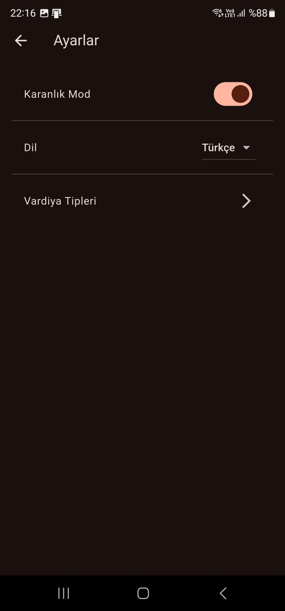

Uygulama Özellikleri




-
Genel Bakış
Uygulamaya hızlı bir bakış.
-
Sezgisel Takvim
Nöbetlerinizi net bir takvimde görüntüleyin.
-
Nöbet Yönetimi
Nöbet ekleyin, düzenleyin ve silin.
-
Özelleştirme
Kendi vardiya tiplerinizi oluşturun.
-
Çoklu Dil Desteği
Uygulamayı tercih ettiğiniz dilde kullanın.
-
Karanlık Mod
Göz yorgunluğunu azaltın.
-
Akıllı Alarmlar
Vardiyalardan önce bildirim alın.
-
İstatistikler
Çalışma düzeninizi takip edin.
-
PDF Dışa Aktarma
Raporlarınızı kolayca paylaşın.
-
Kullanıcı Dostu Arayüz
Kolayca kullanmaya başlayın.